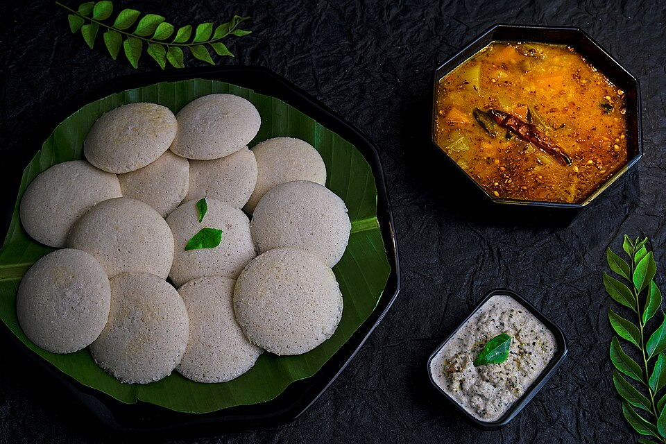

Home
Kerala Idli Sambar Recipe

Idli Sambar — The Heartwarming South Indian Combo
Idli Sambar is one of those comforting meals that feels like a warm hug on a plate. Soft, fluffy steamed idlis soak
up the rich, tangy, and aromatic sambar — a spicy lentil and vegetable stew that is full of bold South Indian
flavors. Whether it is a quick breakfast, a cozy dinner, or a weekend treat, this simple yet soulful combo brings
together nutrition, taste, and tradition in every bite. And of course, no plate is complete without a side of
coconut chutney to round things off!
Ingredients [1 Serving]
For Kerala Sambar
- Cup Arhar Dal
- 1 Small Onion thin sliced
- 1 to 2 Pinch Hing
- 8 to 10 Lady Finger
- 5 to 7 Brinjals
- 2 small-sized tomatoes
- A handful of curry leaves
- Turmeric Powder (As per the taste)
- 1/2 cup tamarind Pulp (Soak tamarind pulp in a hot cup of water. After 1-2 hours, apply pressure so that the
tamarind juice comes out of that pulp)
- 2 tbsp of jaggery powder
- 2.5-3 cups of water
- Salt to taste
For Kerala Sambar Temper:
- 2 tablespoon of regular cooking oil
-
1 teaspoon mustard seeds
- 1 teaspoon urad seeds
- A handful of curry leaves
- 2 to 3 dry red chilies
For The Dal
- 5 tbsp chana dal (split Bengal gram)
- 5 tbsp toovar (arhar) dal
- 5 tbsp green moong dal (split green gram)
- 1 tbsp urad dal (split black lentils)
- salt to taste
- 3 tbsp ghee
- 3 clove (laung / lavang)
- 2 bay leaf (tejpatta)
- 1 tsp cumin seeds (jeera)
- 2 green chilli
- a pinch of asafoetida (hing)
- 1 tsp garlic (lehsun) paste
- 1 cup finely chopped onion
- 1 cup finely chopped tomato
- 1 tsp coriander (dhania) powder
- 1/2 tsp turmeric powder (haldi)
- 1 tbsp chilli powder
- 1/2 tsp garam masala
- 1 tbsp finely chopped coriander (dhania)
For The Baatis
- 1 cup coarse whole wheat flour (jada gehun ka atta)
- 1/2 cup semolina (rava / sooji)
- 2 tbsp besan (Bengal gram flour)
- 1/2 cup milk
- 4 tbsp melted ghee
- 1 tsp fennel seeds (saunf)
- 1/4 tsp carom seeds (ajwain)
- salt to taste
- ghee for deep-frying
For The Topping
- 4 tbsp melted ghee
- 8 tbsp finely chopped onion
- 2 tsp lemon juice
Steps:
To make Kerala Idli Sambar:
- Pressure cook the arhar dal till it is soft and completely cooked.
- Heat oil and add hing and curry leaves. Let both of them splatter.
- Add onion, ladyfinger, brinjal, and tomatoes (In the same order as mentioned).
- Let all of them fry.
- Add turmeric and salt, cover and let them fry.
- Add the sambar masala powder. Keep frying till the raw smell of masala goes away.
-
Add tamarind pulp and jaggery powder. Let it cook for another 3-5 minutes.
- Finally, add the pressure cook dal.
-
Cover and let it cook for a good 8-10 minutes.
- You can adjust the water as per the sambar consistency you desire.
To Temper the Kerala Idli Sambar:
- Heat oil in a tempering pan.
- Add mustard seeds, urad dal, hing, and curry leaves.
- Let all of them splatter for a few seconds.
- Transfer the temper into the Kerala sambar idli pan and let the aromas dissolve for a good 5-7 minutes.
Your tasty Kerala Idli Sambar is ready. This is one of the easiest and different idli sambar recipes
where you can enjoy the authenticity of Kerala Idli Sambar.